A principal atividade do professor nesse módulo é relacionada ao cadastramento de questões de maneira que o aluno possa ter melhor acompanhamento do SAE. Há nesse módulo a possibilidade de cadastrar Questões Avulsas, que consiste em disponibilizar as questões para os alunos poderem responder quando desejarem, contribuindo para o estudo extraclasse deles; e criar Listas, que constitui em preparar questões que ficarão disponíveis aos alunos apenas em um determinado intervalo de tempo, em que pode ser atribuída uma senha a esse conjunto de questões para liberar a realização da lista pelos alunos.
Figura 1 - Tecnologia na Educação.
As questões classificadas como avulsas não estão, obrigatoriamente, vinculadas a nenhuma lista de exercícios, mas permanecem disponíveis no ambiente, sendo relacionadas a cada conteúdo (disciplina). Estas questões devem ser realizadas pelos alunos à medida que estes vão avançando nos conteúdos, respeitando sempre as definições de todo o período de aprendizagem.
O recurso de elaboração de listas de exercícios interativos é fornecido somente ao professor, que controla a elaboração de uma lista com exercícios que variam em tipo de questão, nível de dificuldade e categoria, conforme ele acredite ser mais conveniente a aprendizagem de seus alunos.
Cada uma das listas deve ser cadastrada de acordo com sua categoria, respeitando a categoria das questões (revisão, fixação e avaliativa). No entanto, estas listas podem conter questões com categorias diferentes a sua própria definição, mas somente as listas avaliativas podem incluir questões definidas com esta mesma categoria (avaliativa).
Figura 2 - Tecnologia auxiliando o professor dentro da sala de aula.
O módulo BDQ permite várias ações associadas ao professor, em que através dos botões do menu lateral é possível:
Questões: cadastrar questões, ver as questões cadastradas, responder questões, ver relatório das questões cadastradas.
Listas: criar listas, ver as listas criadas, responder listas, vincular listas a uma turma, ver relatório das listas criadas e vinculadas.
Histórico: ver o aproveitamento de um aluno ou da turma, ver quantidade de questões respondidas, ver relatórios de desempenho, verificar o histórico de um aluno.
Correções: corrigir questões, corrigir listas, ver as questões abertas respondidas por um aluno, pesquisar a correção de questões abertas e listas.
Teste: cadastrar questões de função avaliativa, pesquisa de questões cadastradas nesse módulo, ver teste realizado por aluno, ver relatórios de teste.
Para cadastrar uma nova questão é necessário entrar no módulo Questões do SAE, clicando na esfera Questões na página inicial ou no menu superior.
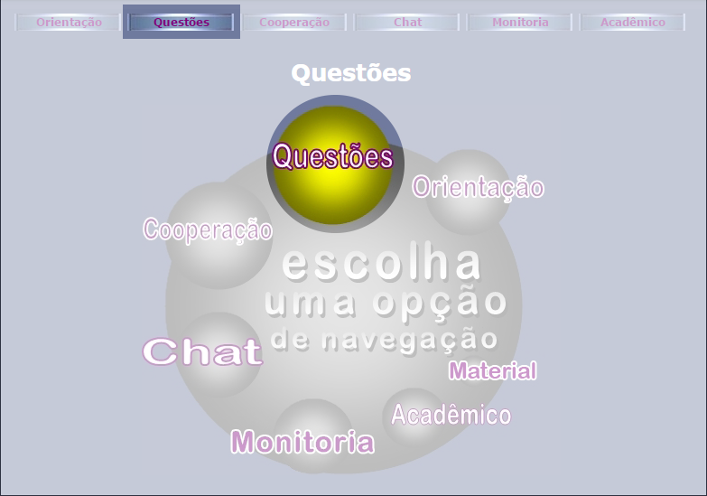
Figura 1 - Esfera Questões.
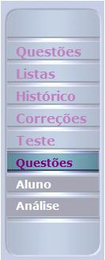
No menu lateral, na extrema esquerda da página, clique em "Teste" para abrir as opções "Questões", "Aluno" e "Análise".
Ao clicar em "Questões", pode-se pesquisar questões já cadastradas, e logo abaixo do quadro de pesquisa há um link "Cadastrar", clique nesse link.
Se clicar em "Aluno", poderá responder ver o histórico do aluno na realização de Testes.
Se clicar em "Análise", poderá analisar uma série de relatórios a fim de obter o melhor acompanhamento do aluno, da turma e da disciplina.
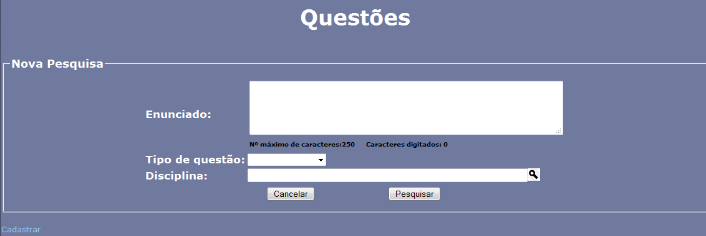
Figura 2 - Tela de Pesquisa, após clicar em "Questões".
Na nova tela, preencha os campos conforme deseja utilizar a questão, atribuindo a categoria, dificuldade, tempo médio de resposta, entre outros.
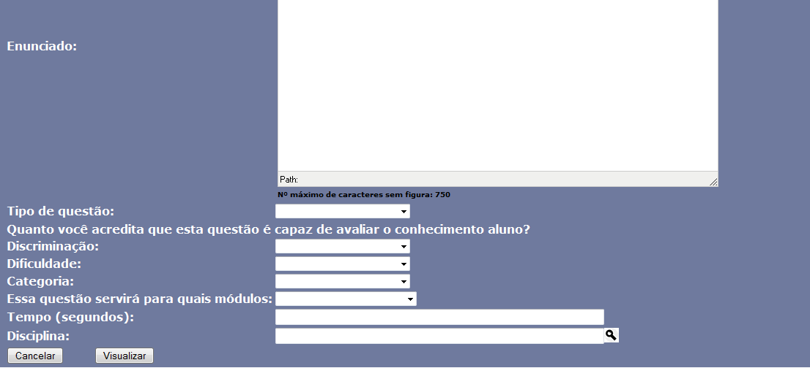
Figura 3 - Tela de cadastro de questões.
Ao finalizar o processo e cadastro, clique em "Visualizar" e será mostrado como o aluno verá a questão que o professor acabou de cadastrar. Para confirmar o cadastramento da questão, clique em "Confirmar", ou clique em "Corrigir" para alterar algum dado da questão.
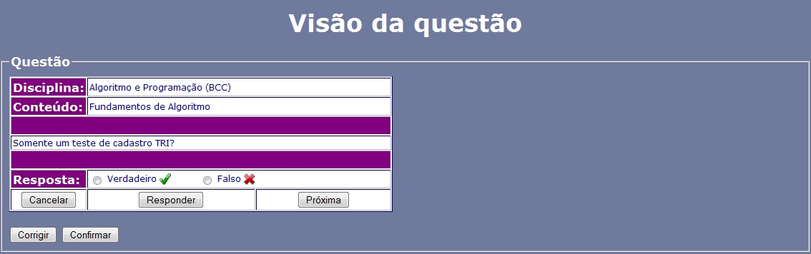
Figura 4 - Visualização da questão pelo aluno.
Para pesquisar, editar ou excluir uma questão é necessário entrar no módulo Questões do SAE, clicando na esfera Questões na página inicial ou no menu superior.
Figura 1 - Esfera Questões.
No menu lateral, na extrema esquerda da página, clique em "Teste" para abrir as opções "Questões", "Aluno" e "Análise".
Ao clicar em "Questões", pode-se pesquisar questões já cadastradas, e logo abaixo do quadro de pesquisa há um link "Cadastrar", clique nesse link.
Se clicar em "Aluno", poderá responder ver o histórico do aluno na realização de Testes.
Se clicar em "Análise", poderá analisar uma série de relatórios a fim de obter o melhor acompanhamento do aluno, da turma e da disciplina.
Figura 2 - Tela de Pesquisa, após clicar em "Questões".
Na parte inferior dessa página será apresentado um relatório com a lista de todas as questões que correspondem a pesquisa, onde é possível excluir, clicando no ícone , editar, clicando no ícone , ou ver mais detalhes de cada questã o clicando no ícone .
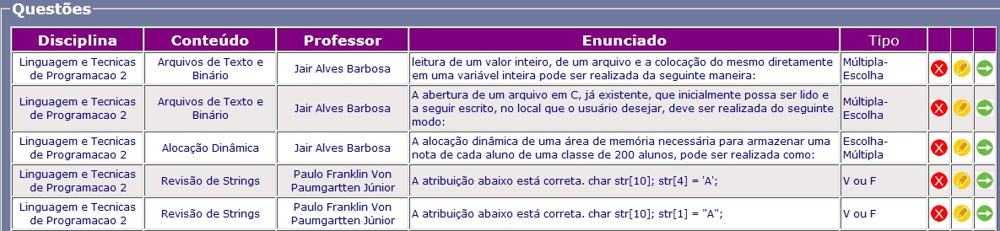
Figura 3 - Lista de questões cadastradas que correspondem a pesquisa.
Se desejar visualizar os dados de uma questão, clique no ícone e será apresentado os dados da questão, como o enunciado completo, os comentários para acerto ou erro, etc.
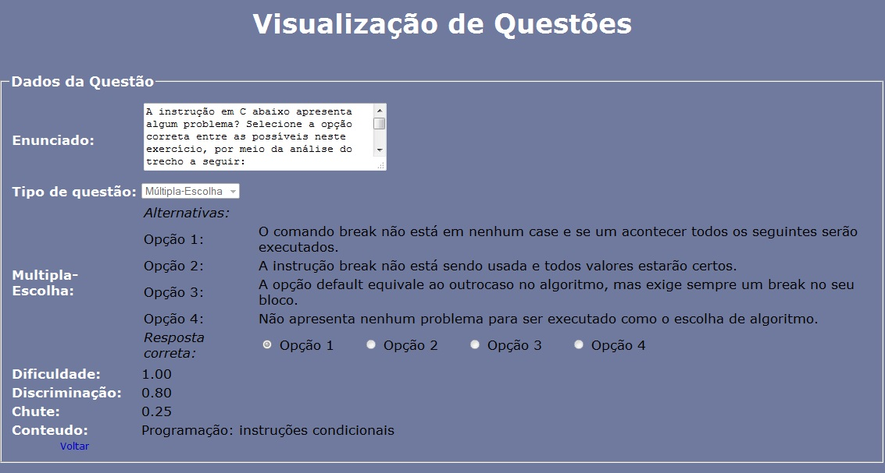
Figura 4 - Tela de visualizar questão.
Se desejar editar uma questão, clique no ícone e será apresentado os dados da questão. Nessa tela, é possível verificar quais dados podem ser alterados e os campos ficam abertos para alteração.
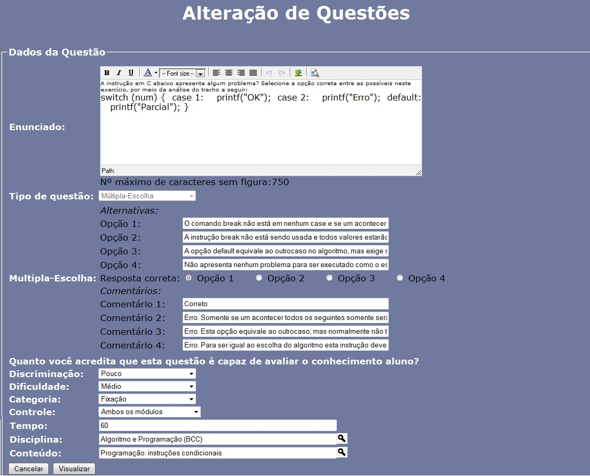
Figura 5 - Tela para edição de uma questão.
Se desejar excluir uma questão, clique no ícone e uma nova tela será apresentada mostrando os dados da questão, para confirmar a exclusão, clique novamente no ícone , ou clique em "Voltar" para cancelar.
Para visualizar um relatório de teste é necessário entrar no módulo Questões do SAE, clicando na esfera Questões na página inicial ou no menu superior.
Figura 1 - Esfera Questões.
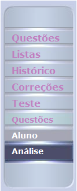
No menu lateral, na extrema esquerda da página, clique em "Teste" para abrir as opções "Questões", "Aluno" e "Análise".
Ao clicar em "Questões", pode-se pesquisar questões já cadastradas, e logo abaixo do quadro de pesquisa há um link "Cadastrar".
Se clicar em "Aluno", poderá responder ver o histórico do aluno na realização de Testes.
Se clicar em "Análise", poderá analisar uma série de relatórios a fim de obter o melhor acompanhamento do aluno, da turma e da disciplina, clique nesse link.
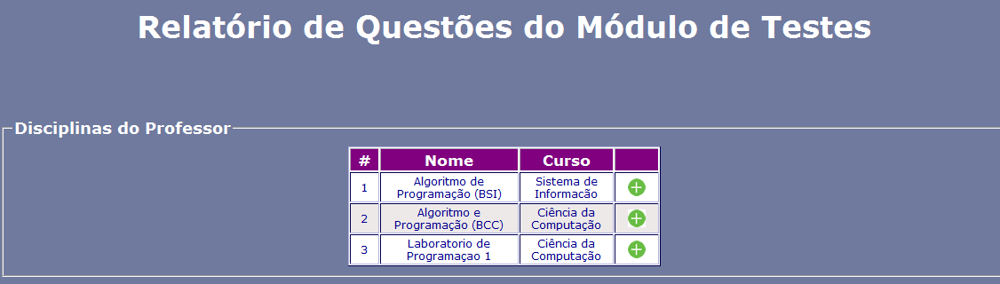
Figura 2 - Lista de disciplinas, após clicar em "Análise".
Na página será apresentado um relatório com a lista de todas as disciplinas ministradas pelo professor, selecione a disciplina clicando no ícone . Feito isso, será apresentado outro relatório com os conteúdos que pertencem a essa disciplina, selecione o conteúdo clicando no ícone .
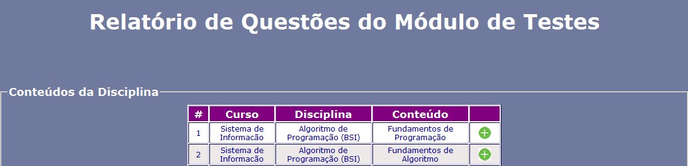
Figura 3 - Lista de conteúdos que pertencem a disciplina selecionada.
Uma tabela referente ao professor será apresentada, mostrando o total de questões no conteúdo cadastradas no módulo Teste, e a quantidade de questões criadas pelo professor no módulo Teste.
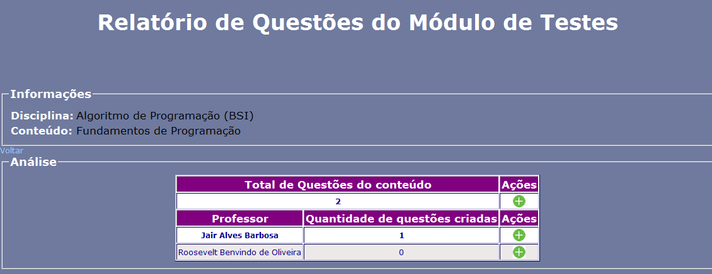
Figura 4 - Tela de visualizar questão.
Para visualizar o relatório das questões do módulo Teste, clique no ícone na frente do nome do professor que deseja ver.
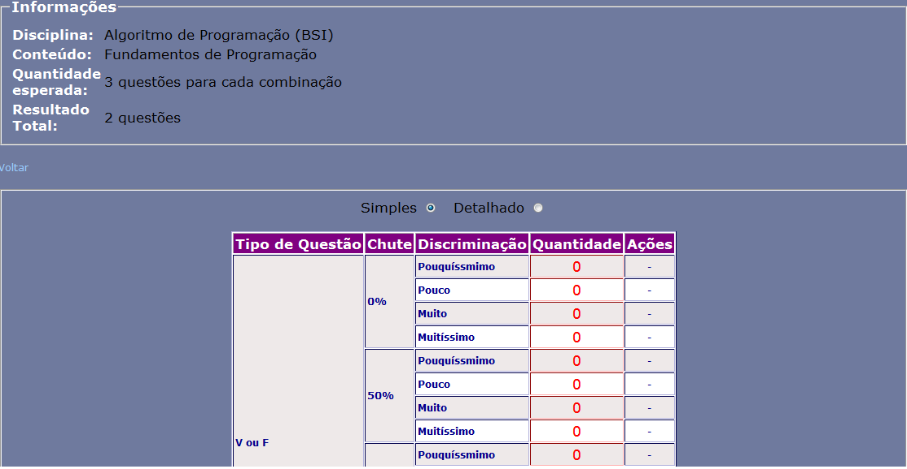
Figura 5 - Apresentação do Relatório Simples das questões.
Para visualizar um relatório de teste é necessário entrar no módulo Questões do SAE, clicando na esfera Questões na página inicial ou no menu superior.
Figura 1 - Esfera Questões.
No menu lateral, na extrema esquerda da página, clique em "Teste" para abrir as opções "Questões", "Aluno" e "Análise".
Ao clicar em "Questões", pode-se pesquisar questões já cadastradas, e logo abaixo do quadro de pesquisa há um link "Cadastrar".
Se clicar em "Aluno", poderá responder ver o histórico do aluno na realização de Testes, clique nesse link.
Se clicar em "Análise", poderá analisar uma série de relatórios a fim de obter o melhor acompanhamento do aluno, da turma e da disciplina.
Figura 2 - Lista de disciplinas, após clicar em "Análise".
Na página será apresentado um relatório com a lista de todas as disciplinas ministradas pelo professor, selecione a disciplina clicando no ícone . Feito isso, será apresentado outro relatório com os conteúdos que pertencem a essa disciplina, selecione o conteúdo clicando no ícone .
Figura 3 - Lista de conteúdos que pertencem a disciplina selecionada.
Uma tabela referente ao professor será apresentada, mostrando o total de questões no conteúdo cadastradas no módulo Teste, e a quantidade de questões criadas pelo professor no módulo Teste.
Figura 4 - Tela de visualizar questão.
Para visualizar o relatório das questões do módulo Teste, clique no ícone na frente do nome do professor que deseja ver.
Figura 5 - Apresentação do Relatório Simples das questões.


 , editar, clicando no ícone , ou ver mais detalhes de cada questã o clicando no ícone .
, editar, clicando no ícone , ou ver mais detalhes de cada questã o clicando no ícone .